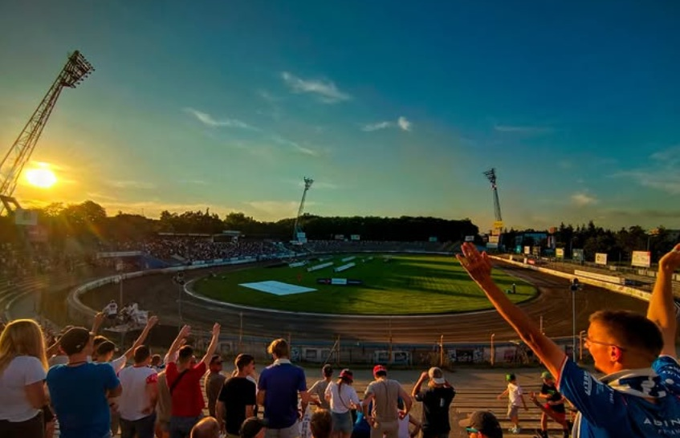
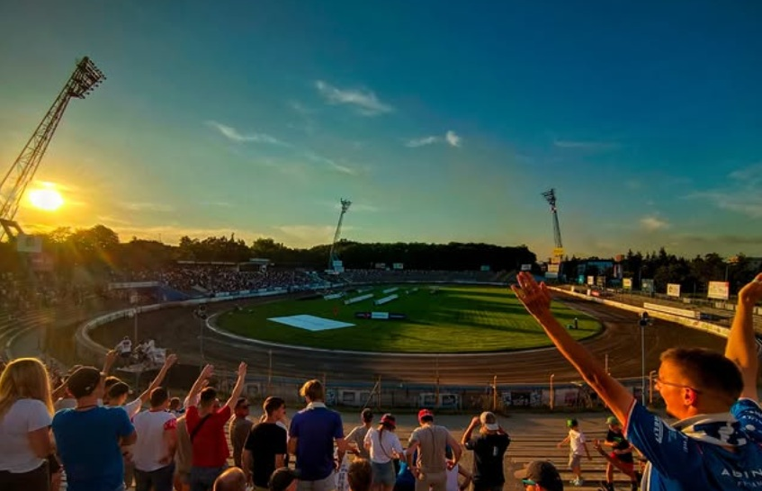

Hobby & interets
Beyond my studies and technical projects, I enjoy staying active and exploring new experiences. In my free time, I play tennis recreationally, which helps me stay focused and energized. I also love traveling and spending time in the mountains, where hiking allows me to combine physical activity with the appreciation of nature. Another passion of mine is photography — I enjoy capturing unique moments, places, and perspectives that reflect the way I see the world. You can view more of my photos here: Click here!
Sports are also an important part of my life. I closely follow football and speedway racing, both of which inspire me with their energy and atmosphere. At the same time, I value personal growth and continuous learning.I am naturally curious and enjoy learning new things, constantly seeking opportunities to broaden my knowledge and skills.
 
